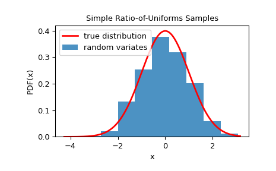

Simple Ratio-of-Uniforms (SROU)#
Required: PDF, area under PDF if different than 1
Optional: mode, CDF at mode
Speed:
Set-up: fast
Sampling: slow
SROU is based on the ratio-of-uniforms method that uses universal inequalities for constructing a (universal) bounding rectangle. It works for T-concave distributions with T(x) = -1/sqrt(x).
>>> from scipy.stats.sampling import SimpleRatioUniforms
Suppose we have the normal distribution:
>>> class StdNorm:
... def pdf(self, x):
... return np.exp(-0.5 * x**2)
Notice that the PDF doesn’t integrate to 1. We can either pass the exact area under the PDF during initialization of the generator or an upper bound to the exact area under the PDF. Also, it is recommended to pass the mode of the distribution to speed up the setup:
>>> urng = np.random.default_rng()
>>> dist = StdNorm()
>>> rng = SimpleRatioUniforms(dist, mode=0,
... pdf_area=np.sqrt(2*np.pi),
... random_state=urng)
Now, we can use the rvs method to generate samples from the distribution:
>>> rvs = rng.rvs(10)
If the CDF at mode is available, it can be set to improve the performance of rvs:
>>> from scipy.stats import norm
>>> rng = SimpleRatioUniforms(dist, mode=0,
... pdf_area=np.sqrt(2*np.pi),
... cdf_at_mode=norm.cdf(0),
... random_state=urng)
>>> rvs = rng.rvs(1000)
We can check that the samples are from the given distribution by visualizing its histogram:
>>> from scipy.stats.sampling import SimpleRatioUniforms
>>> from scipy.stats import norm
>>> import matplotlib.pyplot as plt
>>> class StdNorm:
... def pdf(self, x):
... return np.exp(-0.5 * x**2)
...
>>> urng = np.random.default_rng()
>>> dist = StdNorm()
>>> rng = SimpleRatioUniforms(dist, mode=0,
... pdf_area=np.sqrt(2*np.pi),
... cdf_at_mode=norm.cdf(0),
... random_state=urng)
>>> rvs = rng.rvs(1000)
>>> x = np.linspace(rvs.min()-0.1, rvs.max()+0.1, 1000)
>>> fx = 1/np.sqrt(2*np.pi) * dist.pdf(x)
>>> fig, ax = plt.subplots()
>>> ax.plot(x, fx, 'r-', lw=2, label='true distribution')
>>> ax.hist(rvs, bins=10, density=True, alpha=0.8, label='random variates')
>>> ax.set_xlabel('x')
>>> ax.set_ylabel('PDF(x)')
>>> ax.set_title('Simple Ratio-of-Uniforms Samples')
>>> ax.legend()
>>> plt.show()

The main advantage of the method is a fast setup. This can be beneficial if one repeatedly needs to generate small to moderate samples of a distribution with different shape parameters. In such a situation, the setup step of sampling.NumericalInverseHermite or sampling.NumericalInversePolynomial will lead to poor performance. As an example, assume we are interested to generate 100 samples for the Gamma distribution with 1000 different shape parameters given by np.arange(1.5, 5, 1000).
>>> import math
>>> class GammaDist:
... def __init__(self, p):
... self.p = p
... def pdf(self, x):
... return x**(self.p-1) * np.exp(-x)
...
>>> urng = np.random.default_rng()
>>> p = np.arange(1.5, 5, 1000)
>>> res = np.empty((1000, 100))
>>> for i in range(1000):
... dist = GammaDist(p[i])
... rng = SimpleRatioUniforms(dist, mode=p[i]-1,
... pdf_area=math.gamma(p[i]),
... random_state=urng)
... with np.suppress_warnings() as sup:
... sup.filter(RuntimeWarning, "invalid value encountered in double_scalars")
... sup.filter(RuntimeWarning, "overflow encountered in exp")
... res[i] = rng.rvs(100)
See [1], [2], and [3] for more details.